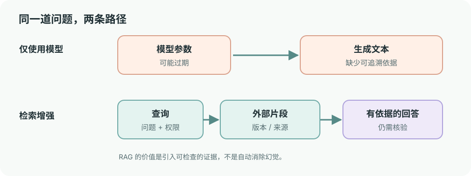
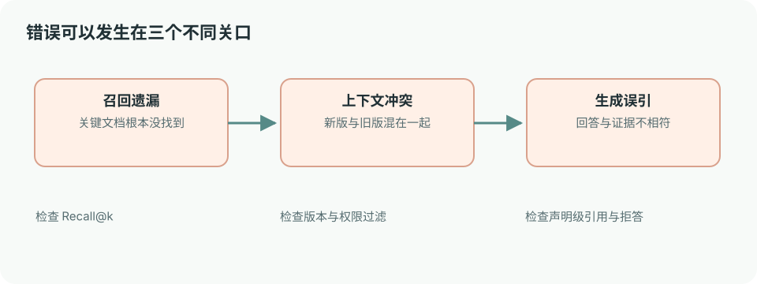

FOUNDATIONS / 01
RAG 为什么需要检索？
从一个查不到的企业政策问题出发，解释参数化知识与可核查证据的差异，区分原始 RAG 论文、现代工程管线与真实失败模式。
SECTION
从一个无法回答的问题开始
假设一个用户询问：“2026 年版企业服务条款允许在付款后多少天内申请退款？”语言模型可能在训练结束后才出现这份条款，也可能没有权限访问它。直接要求模型作答，即使语句自然流畅，也无法告诉我们答案依据的是哪一版文件。
真正的问题不是“模型会不会写出一句话”，而是：面对外部、变化的、需要授权访问的事实，系统能否找到正确材料，并把它与输出的每个事实关联起来？这正是检索增强生成（Retrieval-Augmented Generation，RAG）需要解决的系统问题。
SECTION
RAG 改变了哪条信息路径
没有外部检索时，模型主要依据参数中学习到的规律和当前输入生成回答。加入检索后，模型在处理问题之前，还接收到针对该问题查找出的文档片段。关键变化在于可用证据不是训练时固定进入参数，而是在每次查询时作为上下文进入。

两个对象必须分清
参数化知识
存储在模型权重中，来源广泛但不直接构成逐条可核查的事实表。模型重新训练或微调才能改变权重。
非参数化证据
文档库、索引、数据库或 API 返回的记录，可独立更新、过滤版本与权限，并保留明确的来源标识。
典型流程可以拆成四步：建立文档索引；用问题检索候选段落；过滤、重排并构造带来源 ID 的上下文；最后生成答案并核查引用。工程实现中，还要把权限校验和文档版本控制放在检索前后。
SECTION
从论文模型到工程系统
Lewis 等人提出的 2020 年 RAG 工作，把预训练生成模型与稠密向量检索结合，用维基百科段落作为非参数化记忆研究知识密集型任务。论文区分了RAG-Sequence（一段生成序列主要条件于某个检索文档）与 RAG-Token（不同输出 token 可依赖不同检索文档）的边际化形式。此处“文档”在实验中是检索段落，不能直接等同整个企业 PDF。
对 RAG-Sequence，考虑只使用检索器选出的前 k 个候选，序列概率可概念性地写成：
其中 x 是输入问题，y 是整段输出序列，z 是一个检索候选；η 表示检索器参数，θ 表示生成器参数。由于只枚举 Top-k，该求和是对完整文档集合边际化的截断近似；实际实现可能对截断分数重新归一化。它不同于现代常见的“拼接若干段落到 prompt，再调用 API”的工程管线。
今天的工程 RAG 可以使用关键词检索、向量检索、混合检索、重排序与权限过滤；这些不是原始 2020 年论文已经包含的全部环节。原论文提供历史起点，现代系统需要另外参考检索与运行工程资料。
SECTION
与长上下文、微调如何分工
RAG、长上下文与微调解决的不是同一个问题。长上下文扩大单次请求可输入的信息量，但不能自动查找最新文件；微调可改变模型行为与领域表示，但不天然提供更新及时的、带权限的逐条来源。
| 方法 | 主要改变 | 适合 | 不能承诺 |
|---|---|---|---|
| RAG | 请求时获取外部证据 | 知识频繁更新、需要出处与权限 | 不能保证检索命中，也不能自动防止误引 |
| 长上下文 | 一次可放入更多输入 | 少量长文档、固定材料分析 | 上下文足够长也不代表信息使用均匀 |
| 微调 | 改变模型参数或行为 | 格式、风格、特定任务能力 | 不替代事实库更新和访问控制 |
“长上下文足以取代 RAG”是一个需要按场景验证的命题。Liu 等人研究指出，部分长上下文模型对关键证据在输入中的位置具有明显敏感性；但具体幅度依赖模型、任务与实验设计，不能直接套为所有当前模型的固定规律。
SECTION
证据链在哪里断裂
错误最常发生在不同层：检索阶段漏掉关键文档；上下文整理阶段混入旧版或未授权材料；生成阶段对正确段落做出错误归纳或引用。不同层对应不同诊断方法，不应统一归咎于“幻觉”。

一个基本诊断顺序是：先核对问题的 gold evidence 是否被召回，再核对提供给生成器的片段是否包含答案，最后逐项检查输出声明的引文支持程度。
SECTION
做一个最小引用检查
下面的 Python 代码只做引用 ID 存在性检查：任何被回答引用的文档 ID 都必须在检索候选里。它并不判断证据是否真的支持句子；这是轻量检验，不是事实核查器。
retrieved = {"S1": "2026 版：付款后 7 天内可申请退款。"}
answer = "2026 版退款期限为 7 天。[S1]"
claimed = {"S1"} # 生产系统中由引用解析器抽取
assert claimed <= set(retrieved), "引用了未提供的来源"
assert "7 天" in retrieved["S1"]
print("引用编号存在；仍需判断语义是否蕴含。")运行方式：Python 3.10+，无第三方依赖。最后一行的字符串存在性断言只能测试这个玩具例子，不能推广成语义核验或合规安全机制。
SECTION
设计判断与边界
一套可用的 RAG 系统必须区分知识来源、检索命中、上下文选择和回答忠实度。当知识需要经常更新或按用户授权提供时，引入检索通常比寄希望于模型参数记住最新事实更可管理；但如果证据本身不完整、索引不同步或来源冲突，加入 RAG 仍可能产生错误答案。
下一步最值得追问的是：模型拿到上下文后如何利用它？为什么上下文变长不一定效果变好？这需要理解 Transformer 的 token、注意力与上下文预算。
参考资料与进一步阅读
- Lewis et al., Retrieval-Augmented Generation for Knowledge-Intensive NLP Tasks (NeurIPS 2020) — 原始 RAG-Sequence / RAG-Token 与检索生成组合
- Karpukhin et al., Dense Passage Retrieval (EMNLP 2020) — 双编码器与段落检索
- Liu et al., Lost in the Middle (TACL 2024) — 长上下文位置信息利用的实验证据
- Microsoft Learn, RAG 体系与检索设计 — 现代检索与分块工程设计